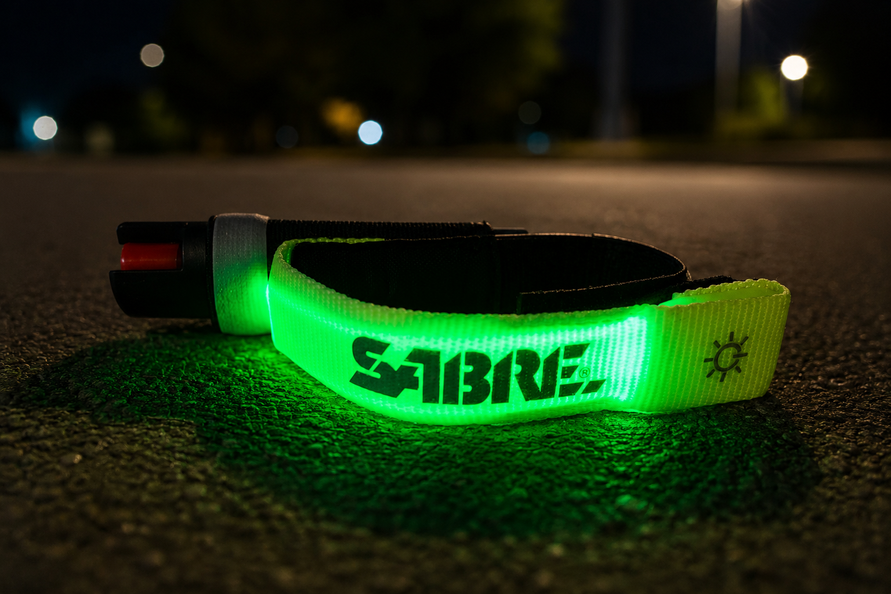

For years I never carried anything to protect myself on a run, because nothing ever happened to me that made me think I needed to. I'd heard the stories, though. People harassed on runs, dogs off leash, and in my area even someone killed by a loose dog. Still, it always felt like something that happened to other people. Until it didn't.
One block from my house, I was attacked by a dog. The owner was close enough to grab it and pull it off before things got worse, but not before my arm and hand were bleeding. The marks are gone now, but the decision that followed stuck with me: what was I actually going to carry?
Why I Landed on Pepper Gel
There's no shortage of options out there, from knives to sprays to personal alarms. I didn't want to hurt an animal, so pepper spray felt like the right call over anything bladed. I looked at keychain canisters and belt-clip models first, both reasonable choices, but I wasn't confident I'd react fast enough if something startled me mid-stride. And like a lot of runners, I don't love carrying things in my hand or clipped to my waist while I'm out.
That's what led me to the SABRE Runner Pepper Gel with Adjustable LED Strap. The strap design solves the exact problem I had: it stays on your hand without you having to grip anything, so it's already there the moment you need it instead of buried in a pocket or an armband.
Real-World Test
About a week after I started running with it, I got to find out firsthand that it works. A few miles from home, a dog started after me. I flipped the safety and sprayed it in the face. I'm fairly sure that dog said "nope" as its whole face scrunched up and it turned right back around. Since then, I don't leave for a run without it on my hand.

Fit & Wear
The strap adjusts easily enough to stay snug without cutting off circulation on longer runs. The one side effect I didn't expect: I'm starting to get a runner's tan line where the strap sits. Small price to pay.
The LED Strap
I haven't needed the LED function yet, since my daylight run turned into the actual test case, but it's a nice piece of added gear. Being more visible to cars on early morning or evening runs is reason enough on its own to like this thing, even before you factor in the pepper gel.
Bottom Line
A genuinely useful piece of safety gear for runners who don't want to carry anything but still want protection ready the instant they need it. Hands-free, fast to deploy, and effective when it mattered. I'd recommend it without hesitation.